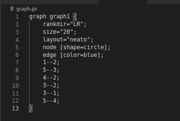
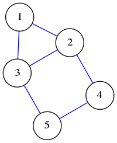
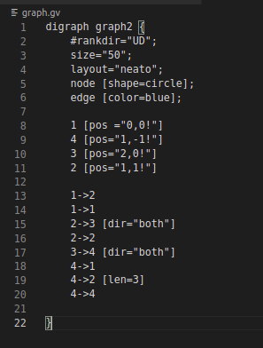
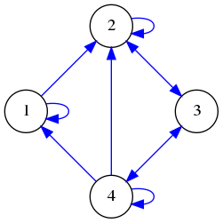
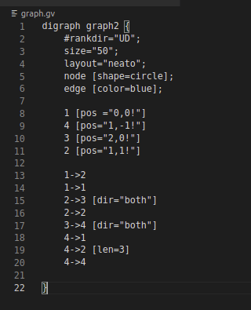
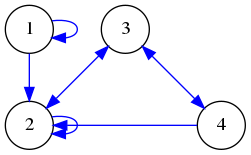
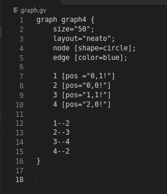
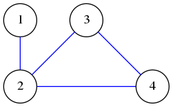
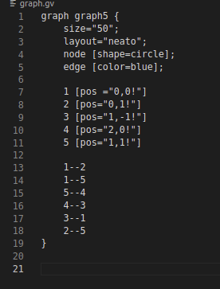
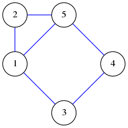

- UNIVERSITE D'ANTANANARIVO
- FACUILTE DES SCIENCE
- --------------------------
- Mathématiques Informatique et
Statistiques Appliquées
- GRAPHVIZ -
Construction de graphe
et
Matrice d'adjascence
- RATEFIARISON Harivony Lalatiana
- harivonyratefiarison@gmail.com
- +261 34 93 851 83
I - Généralité sur Graphviz
GRAPHVIZ est un outil utilisé pour representer des graphes de toute sortes.
Representer un graphe :
- Avec ubuntu, l'installation s'effectue avec le commande $ sudo apt-get install graphviz
- On crée un fichier d'extension .gv ou on va écrire notre commande en language dot
- Exemple pour l'exercice 1 :
- 
- Finallement, le commande à executer pour l'exportation en png : $ dot -Tpng graph.gv -o g1.png
- Resulat :
- 
Fig : g1.png
II - Application
a - Présentation :
Nous avons 6 graphes en disposition dont nous allons :
- Reproduire en utilisant l'outil graphviz
- Representer le profil
- Calculer la dimension pour les matrice symetriques
b - Définition :
-
Graph :
- Matrice d'adjacence :
La matrice d'adjacence sert à réprésenter les rélations entre chaque couple de sommet de la graphe. Soit G une graphe orienté ou non. La matrice d'adjacence A = `(a_(i,j))` de G est telle que :
`a_(i,j)= {[1 text( si les sommets i et j sont connectés)],[0 text( sinon)]:}` - Profil d'un graph :
-
Dimension :
c - Notations :
Dans la suite, on adoptera les notations suivantes:
- `A_i`: Matrice d'adjacence de la graphe `g_i`
- `M_i`: Rangement profil de la matrice `A_i`
d - Réponse aux exercices :
g1
Le code dans graphviz :
Fichier de sortie :
Commentaire :
- On a utiliser rankdir ="LR" pour spécifier le sens d'orientations du graphe, "LR" pour Left to Right
- Avec layout="neato", on utilise le mode d'affichage spécifique de neato
- On peut aussi changer de couleur des arrêtes avec edge [color=blue]
Profil et dimension :
`Profil(A_1) = {(1,1),(2,1),(2,2),(3,1),(3,2),(3,3),(4,2),(4,3),(4,4),(5,3),(5,4),(5,5)}` `dim(Profil(A_1))=12``M_1=([1,,,,],[1,1,,,],[1,1,1,,],[,1,0,1,],[,,1,1,1])`
Matrice d'adjacence :
`A_1=``([1,1,1,0,0],[1,1,1,1,0],[1,1,1,0,1],[0,1,0,1,1],[0,0,1,1,1])`g2
Le code dans graphviz :
Fichier de sortie :
Commentaire :
- On utilise digraph au lieu de graph pour les graph orienté
- Ici, on a utilisé `a [pos="x,y!"]` pour positionner le noeud en (x,y)
- '[dir="both"] : indique au flèche d'indiquer les deux directions
Profil et dimension :
`Profil(A_2) = {}` `dim(Profil(A_1))=12` `M_2=([1,,,,],[1,1,,,],[1,1,1,,],[,1,0,1,],[,,1,1,1])`Matrice d'adjacence :
`A_2=``([1,1,0,0],[0,1,1,0],[0,1,0,1],[1,1,1,1])`g3
Le code dans graphviz :
Fichier de sortie :
Commentaire :
- On utilise digraph au lieu de graph pour les graphes orientés
- Ici, on a utilisé `a [pos="x,y!"]` pour positionner le noeud 'a' en (x,y)
- '[dir="both"] : indique au flèche d'indiquer les deux directions
Profil et dimension :
`Profil(A_2) = {}` `dim(Profil(A_1))=12` `M_2=([1,,,,],[1,1,,,],[1,1,1,,],[,1,0,1,],[,,1,1,1])`Matrice d'adjacence :
`A_3=``([1,1,0,0],[0,1,1,0],[0,1,0,1],[0,1,1,1])`g4
Le code dans graphviz :
Fichier de sortie :
Commentaire :
- On utilise graph au lieu de digraph pour les graphesnon-orientés
- Ici, on a utilisé `a [pos="x,y!"]` pour positionner le noeud 'a' en (x,y)
Profil et dimension :
- `Profil(A_4) = {(1,1),(2,1),(2,2),(3,2),(3,3),
(4,2),(4,3),(4,4)}` - `dim(Profil(A_4))=8`
- `M_4=([1,,,],[1,1,,],[,1,1,],[,1,1,1])`
Matrice d'adjacence :
`A_4=``([1,1,0,0],[1,1,1,1],[0,1,1,1],[0,1,1,1])`g5
Le code dans graphviz :
Fichier de sortie :
Commentaire :
- On utilise graph au lieu de digraph pour les graphesnon-orientés
- Ici, on a utilisé `a [pos="x,y!"]` pour positionner le noeud 'a' en (x,y)
Profil et dimension :
- `Profil(A_5) = {(1,1),(2,1),(2,2),(3,1),``(3,2),(3,3),(4,3),(4,4),``(5,1),(5,2),(5,3),(5,4),(5,5)}`
- `dim(Profil(A_5))=13`
- `M_5=([1,,,,],[1,1,,,],[1,0,1,,],[,,1,1,],[1,1,0,1,1])`